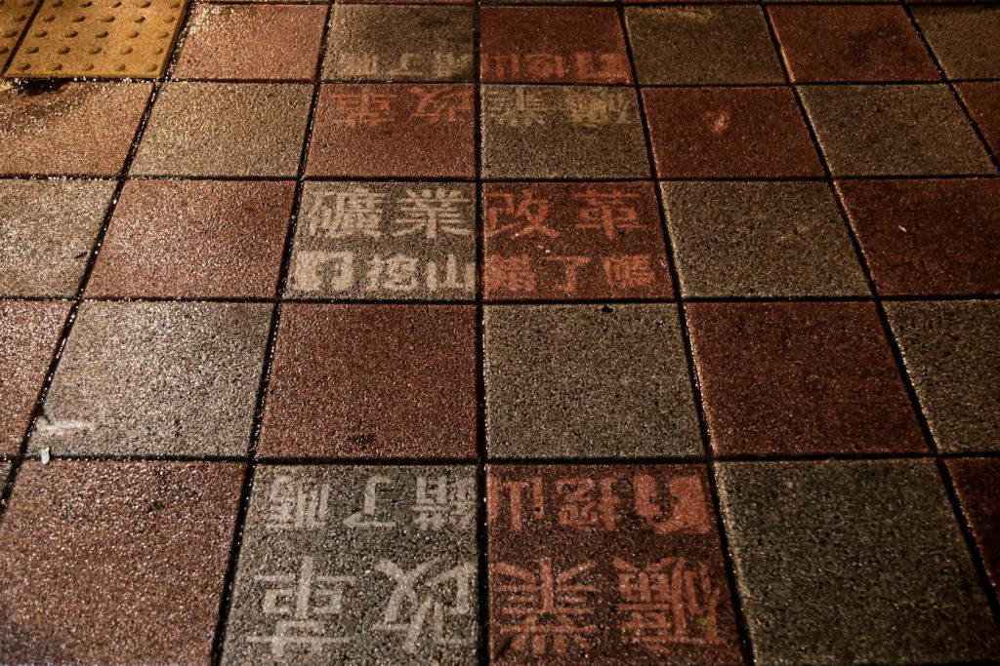
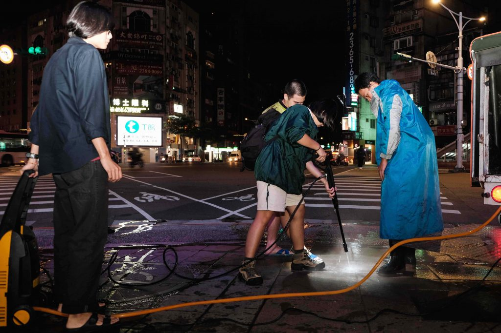

校園
青年夜洗人行道 倡礦業改革訴求
刊出日期：2019/12/06
【記者劉庭莉綜合報導】11月27日深夜至28日凌晨，有一群關注《礦業法》修法議題的大學生，發起夜洗人行道及圍牆的行動。他們開著貨車、載著水箱於捷運古亭站、忠孝復興站、立法院大門等地，以強力水柱清洗充滿髒污的街道，洗下「礦業改革」字樣，表達希望盡速修《礦業法》，避免台灣有限自然資源遭持續開挖消耗殆盡等訴求。
「我覺得這件事有急迫性，開發與環境之間應該取得平衡。」參與夜洗活動、東吳大學政治學系學生林昱彤說。《礦業法》是規範使用我國礦產的法律依據，根據該法，台灣所有礦場只要未擴大營運，都可持續開採，無須經過環境影響評估（以下簡稱環評）。目前146個現役礦場，有117個從未環評，持續開挖恐對台灣的山林環境造成嚴重損害。林昱彤指出，使用自然資源前，礦場應充分與民眾溝通、提出合理的採礦範圍，「開發應有停損點，再無止盡地開墾下去，山林、環境資源會被消耗殆盡。」

學生以夜洗人行道的方式，於地上留下標語及粉絲專頁名稱，「洗」成一排訴求。 圖／參與夜洗活動者張宸晧提供
「我認為環評並不是為了阻擋開發，反而是另一種以更安全方式開發的輔助工具。」行動發起人、國立臺灣大學生物產業傳播暨發展學系學生李若慈指出，環評是以更全面的角度審視整體開發，不只保護環境，也保護身處第一線的當地居民及勞工。目前《礦業法》中，老舊礦場礦權的展延，完全不需要進行環評，李若慈認為，若沒經過環評的風險審查，礦場可能會對環境產生危害。

由於距離本屆立法院會期結束剩一個月，依照屆期不連續的規定，此會期若沒完成修法，礦業改革將全數歸零，學生以「夜洗人行道」的方式，表達修法速度緩慢的不滿。 圖／唐佐欣提供
李若慈與其友人共同於臉書（Facebook）成立粉絲專頁「挖山錯了嗎」，並於27日深夜進行「夜洗人行道」的活動，期望喚起大眾對礦業改革的重視。李若慈表示，既然地球公民基金會等非政府組織，已經針對立法院提出倡議，那麼身為學生，可以透過將《礦業法》相關的複雜議題及修法資訊，轉譯成更簡單易懂的圖像或文字。所以李若慈與其友人選擇創設粉專、做議題懶人包、於各地人行道洗上訴求，讓一般民眾也能快速了解礦業改革的急迫性，以觸及更多群眾、獲得更多關注與了解。
「我覺得這是一件很良性且會讓大眾去注意到的事情，改變不一定要很激烈，而是要透過知名度與輿論。」平時會參與生態宣導的臺大昆蟲學系學生林志賢認為，在《礦業法》頒布後這90年來，世界各國對於生物多樣性、環境保育經過多次重大改革與國際公約的制定，但台灣對於長期危害自然的《礦業法》，卻沒有什麼變動，是一件很令人難過的事情。
「修法需要靠環保團體及大眾聲量才有辦法完成。」同樣參與夜洗活動、國立陽明大學科技與社會研究所學生廖苡珊表示，若無法在此任期內修改，也希望可以累積更多社會關注。而被問到團隊未來是否會有更多類似活動，林昱彤表示，目前還在觀察情勢，不排除會有其他行動。
#大學報
#夜洗人行道
#廖苡珊
#李若慈
#林昱彤
#礦業改革